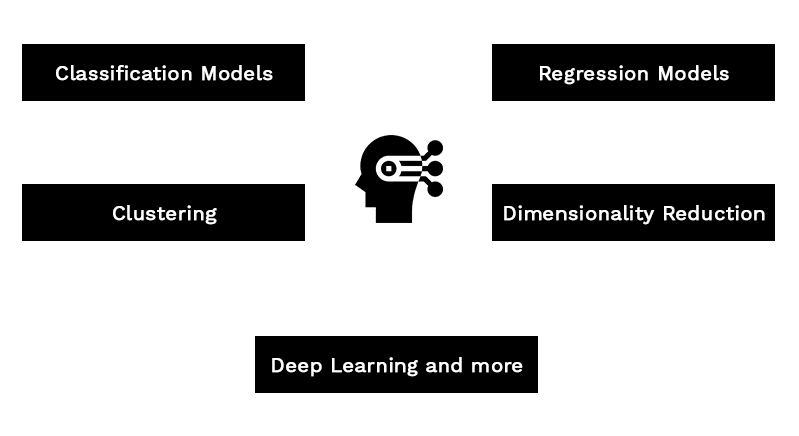

Problem Statement
Streamlining the attendance across your organization becomes one of the major focus for managers and employees to plan work and allocation better, and for HR staff to run payroll seamlessly. Anyways, for the start-up companies, It is quite
not possible to have enhanced attendance devices and applications to manage the employee shift timings. In the market, low-cost biometric devices are available, but most of the devices involve the manual transfer of data from the devices
to our system in excel/CSV format for further analysis; Syncing the data may not be so instant. To overcome the problems like a high investment on attendance devices and not having an enhanced system for low cost, we have proposed a sophisticated
solution, in which we will be marking the attendance in a mobile app with having the base of machine learning model and face recognition concepts. On top of that, the Geofencing layer is added to the mobile application which will keep
track of the location where employee Check-in/out.
Technical Solution
Here we have proposed a technical solution, which takes the advantage of Machine Learning algorithms with face recognition for validating the user to mark attendance. On the other hand, to remove the external attendance device cost, we have
proposed to use an employee’s mobile device with an app installed to mark the attendance. The solution components are explained below.
Machine Learning Model
All we intended to do is to classify the employees with identifying their faces, which will be the replacement of biometric validation of the fingerprints. Image Classification with K Nearest Neighbours shall be chosen as the machine learning
algorithm to perform the classification. K-Nearest Neighbours (k-NN) is a supervised machine learning algorithm i.e. it learns from a labeled training set by taking in the training data X along with its labels y and learns to map the input
X to it’s desired output y. In our case, employee images/video frames will be the training data for the machine learning model. We will be creating a folder for each employee which is the classification criteria. The trained model can
be later used for performing the prediction.

Flask API
The Machine Learning model developed in Python programming will be exposed as API methods – train and detect. The training method is to initiate the training of the model when you add new employees and the detection method is to perform the prediction
of an employee, that accepts an image as an input parameter.
FlaDatabase and Data Service API
The data service layer is to handle the CRUD operation for performing the check-in/out operation for the employees. It will also have methods to list the users with the attendance report, that shall be used for reporting purposes. Any transactional
database will be acting as a back-end layer to hold the entries.
Mobile App
The mobile application is where the user performs the Check-in/out operation. We will be having a user interface, in which the user needs to select the check-in menu for logging in and select the checkout menu to log out. The app consumes
the Flask API method for user employee face verification and Data Service API methods to make an entry for clock-in and clock-out.
Validation in the mobile App
Geofencing validation is required to ensure the employee is within the premises when they do Checkin/out. Due to the flexibility of manual changes to device clock time, we have to use true-time API/plug-in to calculate the actual time of the
geolocation, instead of taking the mobile device time as a log-in time. To ensure, the employees are showing their real face in the phone camera, and not showing the taken photo to bypass the validation, the Deep Convolutional Neural Network
can be used to differentiating between real live streaming video/image and a photo with a face.
Admin Dashboard
A Dashboard needs to be built, which shows the consolidated report on the employee’s availability and provide a detailed report specific to an employee.